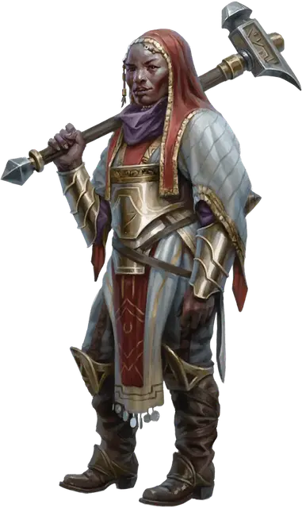

Истрид Хорн
Istrid Horn
Средний Гуманоид (Дварф), нейтрально-злой, именной НИП

Класс Доспеха 18 (латы)
Хиты 117 (18к8 + 36)
Скорость 25 футов
| мод | спас | ||
|---|---|---|---|
| СИЛ | 12 | +1 | +1 |
| ЛОВ | 10 | +0 | +0 |
| ТЕЛ | 14 | +2 | +5 |
| мод | спас | ||
|---|---|---|---|
| ИНТ | 11 | +0 | +0 |
| МДР | 17 | +3 | +6 |
| ХАР | 13 | +1 | +1 |
Навыки Запугивание +4, Религия +3
Сопротивление урону яд
Чувства тёмное зрение 60 футов, пассивное Восприятие 13
Языки Общий, Дварфийский
Опасность 8 (3900 опыта)
Бонус мастерства +3
Особенности
Дварфская устойчивость. Истрид совершает с преимуществом спасброски от яда.
Использование заклинаний. Истрид является заклинателем 9-го уровня. Её базовой характеристикой является Мудрость (Сл спасброска от заклинания 14, +6 к попаданию атаками заклинаниями). У неё подготовлены следующие заклинания жреца:
Заговоры (неограниченно):. свет [light], починка [mending], священное пламя [sacred flame], уход за умирающим [spare the dying];
1 уровень (4 ячейки):. божественное благоволение [divine favor], направляющий снаряд [guiding bolt], лечащее слово [healing word], щит веры [shield of faith];
2 уровень (3 ячейки):. малое восстановление [lesser restoration], магическое оружие [magic weapon], удержание личности [hold person], тишина [silence], божественное оружие [spiritual weapon];
3 уровень (3 ячейки):. маяк надежды [beacon of hope], мантия крестоносца [crusader's mantle], рассеивание магии [dispel magic], возрождение [revivify], духовные стражи [spirit guardians], хождение по воде [water walk];
4 уровень (3 ячейки):. изгнание [banishment], свобода перемещения [freedom of movement], страж веры [guardian of faith], каменная кожа [stoneskin];
5 уровень (1 ячейка):. небесный огонь [flame strike], множественное лечение ран [mass cure wounds], удержание чудовища [hold monster].
Действия
Мультиатака. Истрид совершает две рукопашные атаки.
Молот. . Рукопашная атака оружием: +4 к попаданию,досягаемость 5 футов, одна цель. Попадание: 8 (2к6 +1) дробящего урона.
Нюх на сокровища (3/день). Истрид может определять по запаху местонахождение драгоценных металлов и камней, таких как монеты и ограненные драгоценные камни, в пределах 60 футов от себя.
Описание
Истрид считается мастером торговли и монет Чёрной Сети в Глубоководье. Щитовая дварфийка нелегально выдаёт ссуды в хорошо охраняемом складе в районе Доков и даёт в долг тем, кто в нужде. Её проценты сравнимы с процентами конкурентов (среди которых — благородные семейства банкиров вроде Кассалантеров и Арлингстаров), но кара за невыплату долга сурова.
Истрид поклоняется Вергадейну, дварфийскому богу богатства и удачи. Она любит, когда другие перед ней в долгу, и нанимает головорезов и громил выбивать задолженности. Если же и этого не хватает, Истрид может позвать на помощь старых товарищей по приключениям.
Разбойниками Рока прозвали себя пятеро беспринципных искателей приключений, обожавших грабить логова личей (которые многие называют «роковыми»).
Три года назад они прекратили поиски приключений, вступили в Чёрную Сеть и приехали в Глубоководье, планируя устроить тут ячейку Жентарим. За это время они заключили союзы с разными аристократами и гильдиями, а с другими поссорились, в то же время пытаясь отбиться от лазутчиков Арфистов.